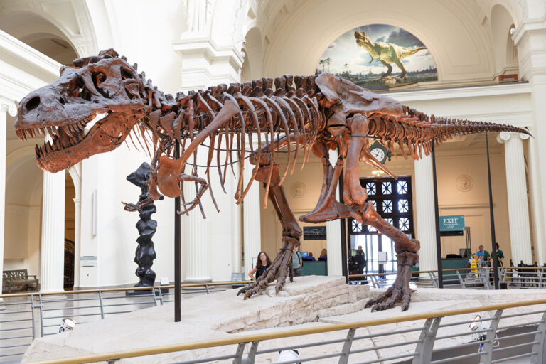

Fósseis são restos, vestígios ou evidências de organismos do passado preservados em materiais geológicos. Ossos, dentes, pegadas e ovos podem fornecer informações importantes.

Como conhecemos animais que viveram milhões de anos atrás?
Fósseis são restos, vestígios ou evidências de organismos do passado preservados em materiais geológicos. Ossos, dentes, pegadas e ovos podem fornecer informações importantes.

Em condições favoráveis, restos de um organismo são rapidamente soterrados por sedimentos. Com o tempo, processos físicos e químicos podem preservar ou substituir partes do material original.
Ouça o áudio abaixo relacionado ao conteúdo de paleontologia: